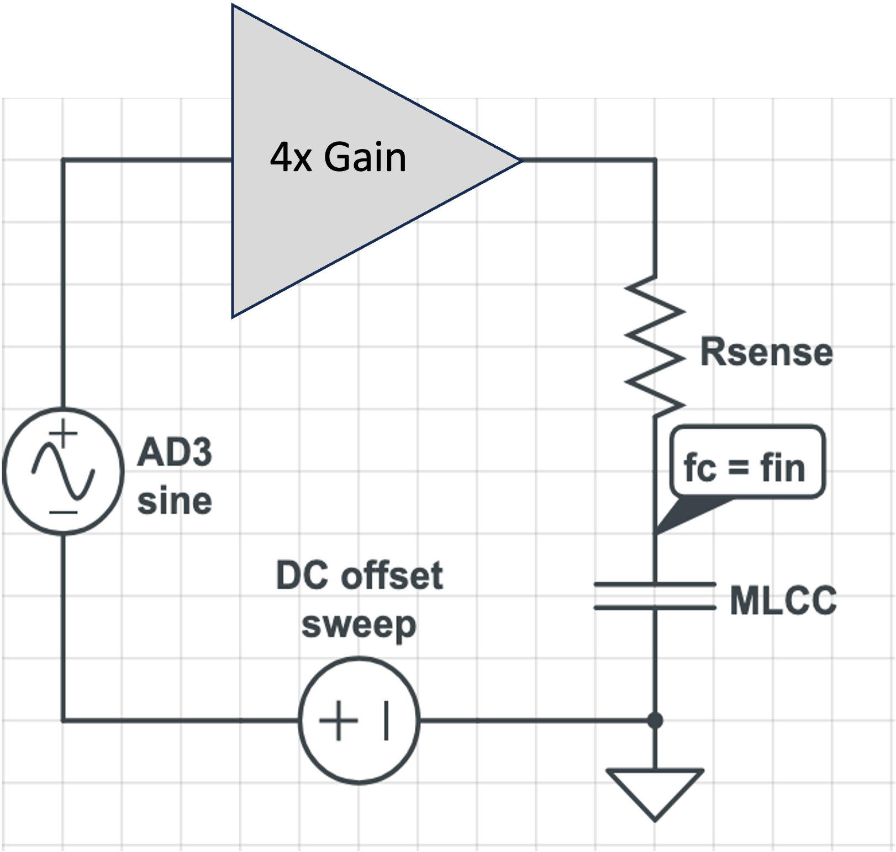

Engineering Projects Archive
Here is a collection of projects I have completed as an electrical engineering student including personal, academic, and research projects.

★ Current Project
MLCC Nonlinearity Characterization
I am currently designing an automated characterization system for multilayer ceramic capacitor nonlinearity using capacitance-versus-voltage measurements and harmonic distortion analysis.
- Analog Discovery 3 automation
- Python and WaveForms SDK
- Capacitance-voltage measurement
- FFT harmonic analysis
Python · Signal Processing · Instrumentation
Noise Spectrometer
Developed a low-cost software-defined instrument for measuring electronic component noise from 0.1 Hz to 10 kHz.
- Low-noise analog front-end design
- Python data acquisition
- FFT and spectral analysis
- Johnson noise measurements from 1 kΩ to 1 MΩ
Python · Analog Design · FFT · Instrumentation
Closed-Loop Robot Motor Control
Implemented 555 timer PWM generation and encoder feedback for speed sensing, an I-compensator, motor direction control, and motor driver circuits in a closed-loop system. Built and debugged hardware with benchtop oscilloscopes and SPICE simulation.
Programmed movement instructions using Arduino Nano Every. Added light-sensing resistors and programmed the robot to follow light.
Digital Synthesizer
Designed and implemented a digital synthesizer on an FPGA, combining digital logic design with my interest in music production. The project generated square wave tones digitally at different frequencies corresponding to user input. The note information and frequency are displayed. The project also uses a quadrature encoder for PWM volume control and the Boolean FPGA board LEDs.
Through the project, I gained experience with FPGA development and digital signal generation.
NASA Space Grant Payload
I was the project lead on a five-person team that designed and built a balloon payload launched to the edge of space, collecting and transmitting live data using LoRa radio. The payload collected atmospheric data such as temperature and humidity and included an IMU.
We also measured radiation using Geiger counters and used the same chemical reaction found in hand warmers as a heating element to regulate the temperature of electronic components at high altitudes.
LCD Side Scrolling Game
Programmed a side-scrolling game on an LCD display using an Arduino Uno microcontroller. The game implemented player movement, obstacle generation, collision detection, and continuously updating obstacles. The user presses a button which causes the character to jump. The player must press the button at the right time to avoid an obstacle successfully.
This project strengthened my experience with embedded programming, display control, I2C communication, and user input handling.
Polyphonic MIDI Keyboard
Created a polyphonic MIDI keyboard capable of detecting multiple simultaneous key presses with eight playable buttons and two additional buttons for shifting the octave. The project combined input processing and note mapping to create a MIDI instrument.
This project gave me hands-on experience with user input handling and note mapping.
About
I first became interested in engineering when I was 23 years old because of my love for math. The decision to go to engineering school required me to change many aspects of my life. Before university, I worked full-time as a Barista and manager at a family-owned coffee shop, while producing electronic music in my free time.
I was not sure what I wanted to study at first, but engineering seemed to be the only option I really felt drawn to. Now, as an undergraduate at CU Boulder I know that electrical engineering was the perfect fit for me! I love learning and understanding how physical circuits work, designing physical systems, and relating them to analytical models.
This degree is more creative and fulfilling than I ever imagined. I hope to add plenty more projects to this archive!
{kind=link}
{kind=link}
{kind=link}
{kind=link}
{kind=link}
{kind=link}